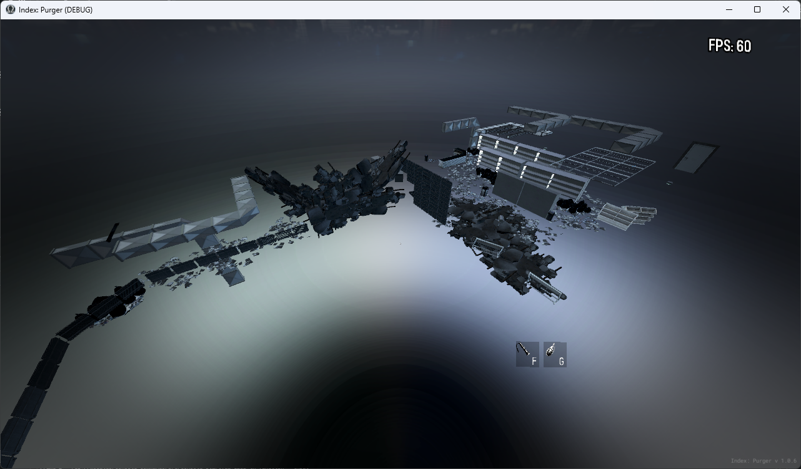
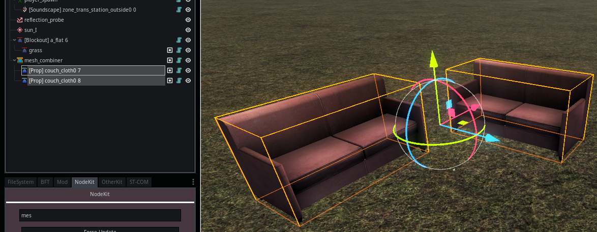
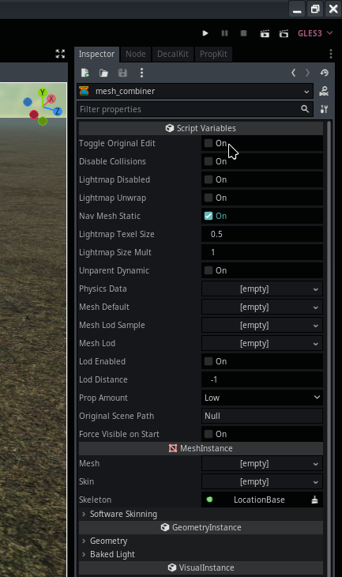
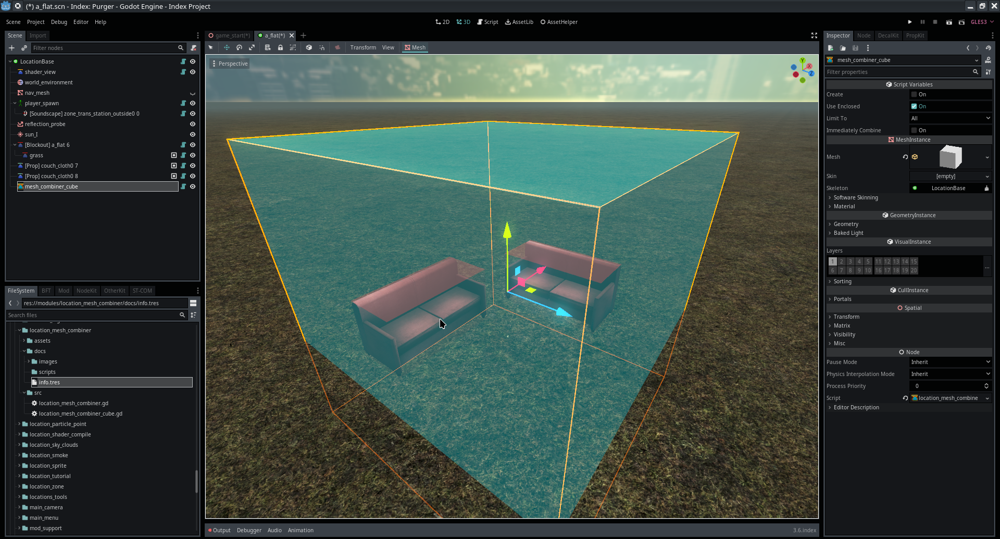

Module: location_mesh_combiner
Documentation last edited: October 23, 2025 at 14:33 UTC
Description
LocationMeshCombiner
combines all child meshes into one singular piece to reduce drawcalls, material and surface changes. Works with
LocationProp
and
LocationBlockoutMesh
only.

This node is combining all meshes despite their material count of positioning. The resulting mesh will contain globally transformed meshes combined altogether into one. Origin of
LocationMeshCombiner
is always
Vector3.ZERO
.
This module was developed before official introduction of "Merge Groups" into branch of Godot 3. Therefore, this module is functioning better with existing toolset.
Algorithm
1. Collect all
MeshInstance
that must be combined (all of them are children of this node)
- Exclude special meshes like glass, player clips, etc.
2. For each
MeshInstance
:
- Iterate though all surfaces
- Group surfaces by material using
get_material_key()
which considers:
- Material resource path
- Material name
- Special shader properties of
UserSpatialUbershader
- Create
CombinerSurfaceData
object to track original surface info
3. Mesh data combination
- For each material group:
- Initialize empty arrays for combined vertex data
- Process each surface in the group:
- Transform vertices/normals to world space
- Offset indices to account for merged vertices
- Combine all standard mesh arrays (UVs, colors, bones, etc.)
- Add combined surface to final
ArrayMesh
- Assign appropriate material
4. Post-Processing
- Clean up editor-specific materials
- Handle special cases (occluders, glass surfaces)
- Generate physics collision data
- Process lightmap UVs if enabled
- Set up LOD system if enabled
TL;DR; Get all data from arrays, world-space the shit out of it, put it all together, tada, here's your combined mesh.
Usage


The node itself is functioning in a simple way. You just put all your props or blockout meshes as a child of this node and then press "Toggle Original Edit". The child nodes will disappear and you will get your fresh fancy combined mesh instead. You can press this button again to get your child meshes back to edit them.
Quality of Life
Surely you can just select all props or meshes one-by-one just to put them as children of this node. But that's too much hassle when amount of overall elements is nearing hundreds and they are placed in a chaotic manner. That's why
LocationMeshCombinerCube
exists.

You can simply create this node, scale it, cover all needed meshes, it'll highlight them with a red cube. When you are done, press "Create" and it'll create you a combined mesh.
General Information
Root directories list
assets, docs, src
Nodes
LocationMeshCombiner
LocationMeshCombinerCube
Classes
None
Resources
None
Other Scripts
None